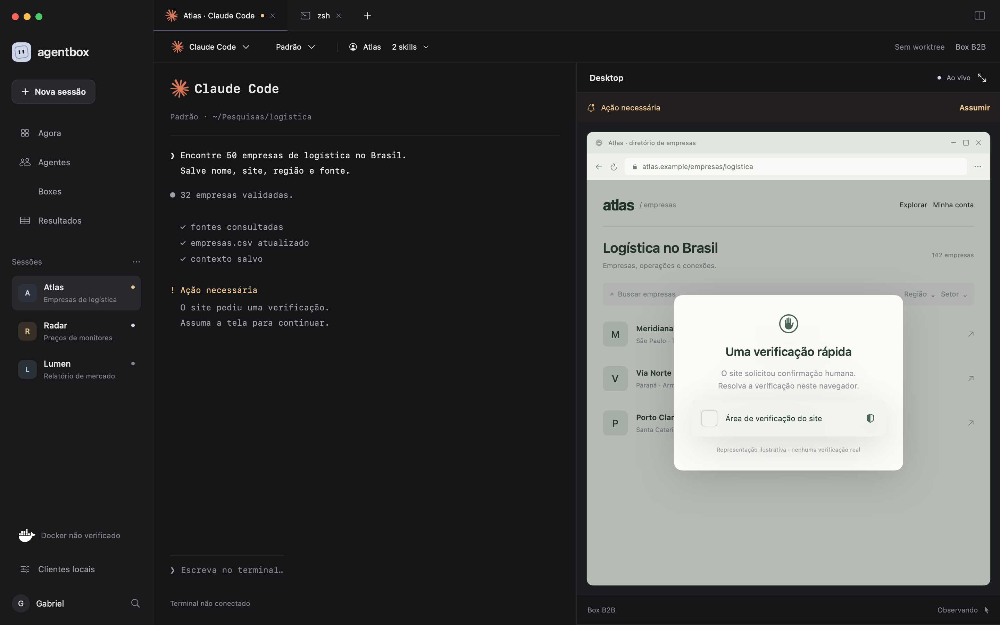

Abrir protótipo · Especificação · Guia do pacote
Design de um app macOS para terminais originais e desktops Docker, preparado em 15 de outubro de 2026. A prévia demonstra comportamento de interface com dados fictícios. Esta revisão não equivale a testes de um runtime operacional.
Logos oficiais aplicados à prévia web, ao app Swift, às 16 telas e ao motion. Claude vem do press kit da Anthropic; Codex, do asset distribuído com o app instalado; Docker, LinkedIn e X vêm dos kits das marcas; Google e Crunchbase, dos ícones publicados em seus próprios sites. Os arquivos e hashes estão no registro de origem. Nenhum logo foi redesenhado ou gerado por IA.

| Área | Evidência e resultado |
|---|---|
| Build nativo | Quatro arquivos Swift compilados com swiftc 6.2.4, SwiftUI/AppKit/AVKit, target arm64 macOS 14. Build local usado no macOS 26.3.1. Sem dependência de serviço externo. |
| Render das telas | 16 estados exportados com ImageRenderer em 2880×1800. Folha de contato inspecionada. Controles Menu/Picker com representação estática própria na exportação, evitando placeholders de views AppKit. |
| App nativo | Abertura do build revisado; navegação de Agora para terminal; Assumir/Devolver; seleção de outro CLI e confirmação do checkpoint; abertura de Nova sessão; Shell + Avulso + desktop desativado. Os estados esperados apareceram na árvore de acessibilidade. |
| Prévia web | Assumir/Devolver, Claude Code → Codex com checkpoint, modelo Opus, shell avulso sem desktop, biblioteca de agentes, memória selecionável, histórico e prévia de Radar por foco de teclado. Verificado no navegador do Codex, inclusive layout estreito. |
| JavaScript | Validação sintática com node --check após a revisão final. Fontes e imagens são locais. |
| Motion | Composições determinísticas com window.seek(t). Sweep de layout: 240 instantes no estudo, 40 no loop; sem texto cortado, sobreposição de textos ou extrapolação da safe zone. Frames de seis momentos inspecionados visualmente. |
| Vídeos | Estudo: 5760 frames capturados a 240 fps, blend de 4, H.264 1920×1200, 24 s, 1440 frames a 60 fps. Loop: 960 frames de origem, H.264 512×512, 4 s, 240 frames a 60 fps. Sem áudio. Metadados confirmados com ffprobe. |
| Fontes | Manrope local; três pesos estáticos no app para registro CoreText previsível. SIL Open Font License incluída. |
A versão v0.4 foi compilada, reaberta e inspecionada no Mac. Os logos foram conferidos em Clientes locais, Nova sessão e nos renders dos perfis. O seletor de agente e o menu de skills aparecem na nova sessão. A inspeção confirma o design; não valida execução real dos clientes.
Não foram testados PTYs reais, comandos de agentes, login de contas, Docker, stream remoto, controle de browser real, worktrees reais, isolamento, persistência, backups, exportação operacional, VoiceOver completo, memória sob carga ou versões antigas do macOS. Esses testes têm critérios de aceite na spec. A prévia não consulta nem copia suas credenciais.
Algumas ações permanecem ilustrativas: importação/criação de agentes, criação e backup de perfis, resultados/exportação e navegação dentro do desktop. Sessões e métricas usam fixtures; não há histórico persistente. A versão web usa imagens de referência para Boxes e Resultados. O app está em build local de desenvolvimento, sem distribuição/notarização.
Ver as 16 telas · Loop reutilizável · Integração Swift do loop
O plano começa por detectar o CLI existente e hospedá-lo em PTY nativo. Em seguida, conecta uma box gráfica real e prova que humano e agente usam a mesma sessão, com controle exclusivo. Registry de agentes, memória, persistência de perfis e passagem de harness são integrados sobre essa base. O aceite exige evidência funcional, não apenas semelhança visual.
Referências técnicas, contratos, migração do skill e plano de implementação estão na spec de 19 capítulos.